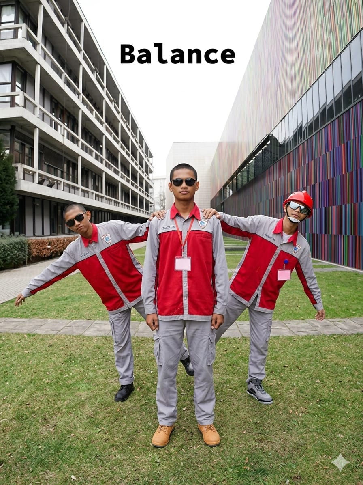
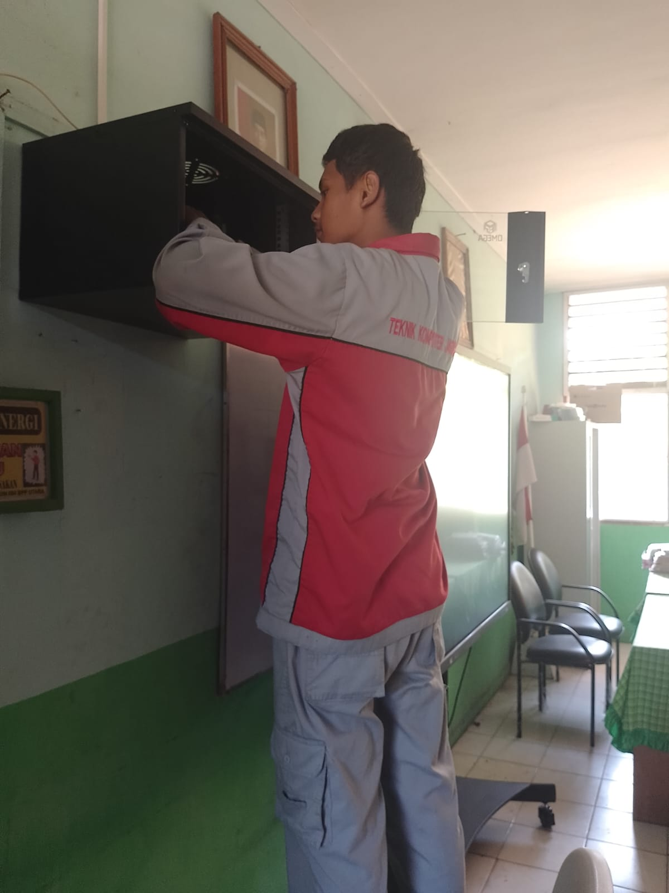
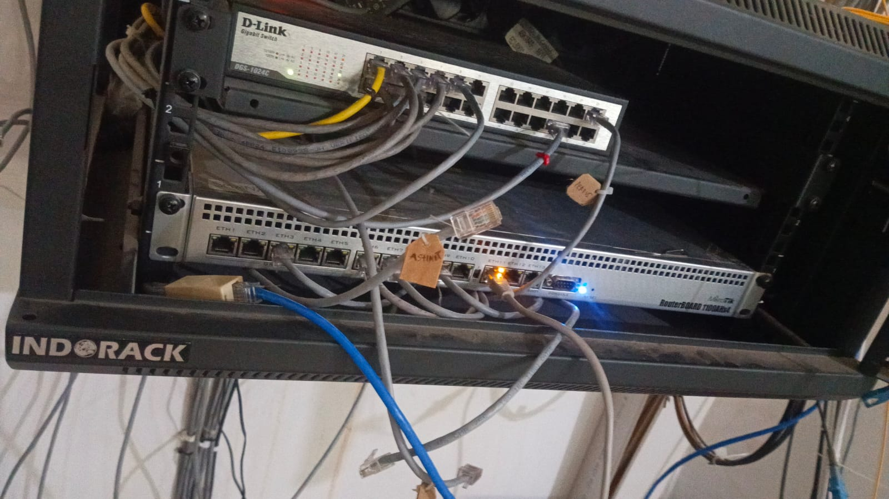

Network Engineer | MikroTik Specialist
Lulusan Teknik Komputer dan Jaringan (TKJ) yang memiliki pengalaman dalam instalasi dan konfigurasi jaringan komputer, khususnya menggunakan perangkat MikroTik. Terbiasa melakukan perancangan jaringan LAN/WAN, pengaturan IP Address, routing, serta manajemen bandwidth untuk kebutuhan jaringan skala kecil hingga menengah. Memiliki kemampuan dalam pemasangan dan penataan perangkat jaringan seperti router, switch, dan rack server, serta memahami troubleshooting dasar untuk memastikan kestabilan dan keamanan jaringan. Selain itu, memiliki pengetahuan dasar dalam pengembangan web menggunakan HTML dan CSS sebagai pendukung dalam pengelolaan sistem berbasis teknologi.

Melakukan pemasangan dan penataan perangkat jaringan dalam rack.

Routing, IP management, dan konfigurasi jaringan lokal.